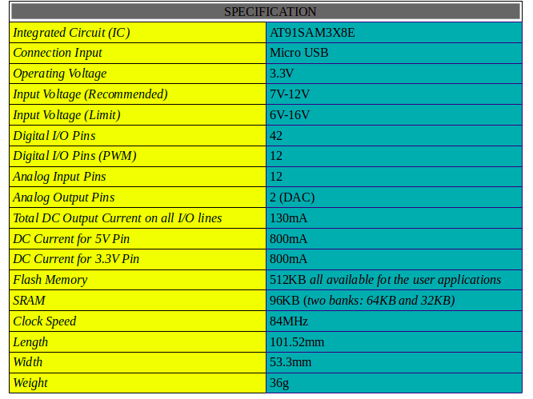

Macam-macam Arduino
Karena Arduino makin berkembang dengan kebutuhan yang bermacam-macam, Arduino pun memiliki beberapa jenis untuk mempermudah penggunanya dalam membuat projek.
Berikut adalah macam-macam Arduino:
1. Arduino Uno (R3)

Jenis ini paling banyak digunakan apalagi untuk sobat yang ingin belajar Microcontroller, karena banyak sekali referensi-referensi yang membahas tentang Arduino tipe yang satu ini. Nah.. jika sobat ingin belajar Microcontroller penulis menyarankan agar menggunakan tipe yang satu ini. Arduino Uno R3 memiliki spesifikasi sebagai berikut:
Klik disini! Untuk Pembelian barang!
2. Arduino Mega
Tipe ini persis seperti Arduino Uno, yang membedakan hanya pada IC yang lebih tinggi dan Pin I/O yang lebih banyak. Arduino Mega memiliki Spesifikasi sebagai berikut:
Klik disini! Untuk Pembelian barang!
3. Arduino Due
Due menggunakan IC yang lebih tinggi yaitu ARM Cortex CPU. Berikut adalah spesifikasi lengkapnya:
Klik disini! Untuk Pembelian barang!
4. Arduino Leonardo
Tipe ini sangat mirip dengan Uno R3, karena memiliki digital I/O dan Pin Analog Pin yang sama. Yang membedakan pada Connection Input (Untuk memprogram) menggunakan Micro USB. Berikut adalah spesifikasi lengkapnya:
Klik disini! Untuk Pembelian barang!
5. Arduino Nano
Tipe ini berbeda dengan Arduino lainnya, karena Arduino Nano berukuran kecil yakni hanya 1.85 cm x 4.3 cm, untuk memprogramnya menggunakan USB Mini-B. Berikut adalah spesifikasinya:
Klik disini! Untuk Pembelian barang!
Itulah macam-macam Arduino, sebenarnya masih banyak lagi jenis-jenis dari Arduino. Yang saya sebutkan adalah jenis yang saya tahu saja, untuk sobat yang ingin mengetahui lebih banyak lagi, sobat bisa mencari referensi-referensi lainnya.
Tutorial yang akan datang, penulis akan menggunakan Arduino Uno R3, karena cocok untuk yang mau mulai belajar Microcontroller.
Terima Kasih karena telah membaca Artikel ini, Semoga bermanfaat :)